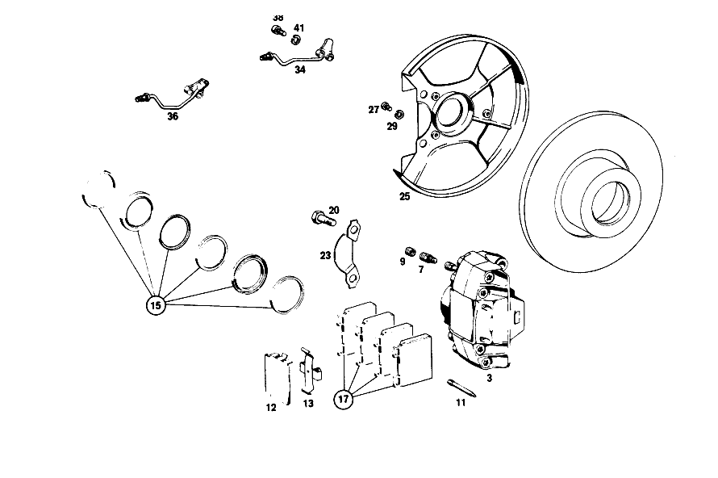

| № | Артикул | Название | Кол. | Примечание | Ограничение |
|---|---|---|---|---|---|
| 3 | A 001 421 02 98 | СКОБА ТОРМОЗН. МЕХАНИЗМА | - | [002] 012 FROM CHASSIS 054903; 014 FROM CHASSIS 043168; 015 FROM CHASSIS 002581 [050] 016 UP TO CHASSIS 075175; 018,019 UP TO CHASSIS 081818 | |
| 7 | A 000 420 17 55 | - Клапан выпуска воздуха | 2 | ||
| 9 | A 000 421 71 87 | - КОЛПАЧОК | - | ||
| 9 | A 000 421 08 87 | - Защитный колпачок | 2 | ||
| 11 | A 000 991 03 60 | - Фиксирующий штифт | 4 | [050] 016 UP TO CHASSIS 075175; 018,019 UP TO CHASSIS 081818 | |
| 12 | A 000 421 02 20 | - Щиток | 2 | ||
| 13 | A 000 421 06 91 | - Разжимная пружина | 2 | [034] 016 FROM CHASSIS 075176; 018,019 FROM CHASSIS 081819 | |
| 15 | A 000 586 64 42 | ремкомплект | 2 | TEVES | |
| 17 | A 001 420 77 20 | К-т тормозных колодок | 1 | К\-Т ДЕТАЛЕЙ | |
| 20 | A 111 421 03 71 | болт | 4 | [050] 016 UP TO CHASSIS 075175; 018,019 UP TO CHASSIS 081818 | |
| 23 | A 115 994 07 32 | Стопорная шайба | 2 | ||
| 25 | A 108 420 02 44 | ЗАЩИТНАЯ ПАНЕЛЬ | 1 | СЛЕВА [050] 016 UP TO CHASSIS 075175; 018,019 UP TO CHASSIS 081818 | |
| 27 | N 000912 006040 | Цилиндрич. винт | 4 | ||
| 29 | N 007980 006000 | Пружинное кольцо | 4 | ||
| 34 | A 108 420 00 28 | Тормозная трубка | 1 | СЛЕВА | |
| 36 | A 108 420 01 28 | Тормозная трубка | 1 | СПРАВА | |
| 38 | N 000912 006063 | Цилиндрич. винт | - | ||
| 38 | N 000912 006170 | Цилиндрич. винт | 2 | BRAKE LINE TO STEERING KNUCKLE | |
| 41 | N 007980 006000 | Пружинное кольцо | 4 | BRAKE LINE TO STEERING KNUCKLE | |
| 44 | A 000 420 46 83 | Тормозной суппорт | 1 | [004] 016 UP TO CHASSIS 034763; 018 UP TO CHASSIS 035762 EXCEPT FOR 035757; 019 UP TO CHASSIS 035738 EXCEPT FOR, SEE FOOTNOTE 51 [051] 035555, 035567, 035568, 035599, 035637, 035658, 035670, 035674, 035675, 035681. | |
| 44 | A 000 423 36 98 | СКОБА ТОРМОЗН. МЕХАНИЗМА | - | ||
| 44 | A 000 423 42 98 | СКОБА ТОРМОЗН. МЕХАНИЗМА | - | [005] 016 FROM CHASSIS 034764; 018 FROM CHASSIS 035763 ALSO INSTALLED ON 035757; 019 FROM CHASSIS 035739 ALSO INSTALLED ON, SEE FOOTNOTE 51 [051] 035555, 035567, 035568, 035599, 035637, 035658, 035670, 035674, 035675, 035681. [039] 016 UP TO CHASSIS 079653; 018 UP TO CHASSIS 085777; 019 UNTIL PRODUCTION STOP; 057,058 UP TO CHASSIS 002499 | |
| 44 | A 000 423 95 98 | Тормозной суппорт | 1 | LEFT;TEVES;LESS LINING [040] 016 FROM CHASSIS 079654; 018 FROM CHASSIS 085778; 057,058 FROM CHASSIS 002500 | |
| 44 | A 000 420 47 83 | Тормозной суппорт | 1 | [004] 016 UP TO CHASSIS 034763; 018 UP TO CHASSIS 035762 EXCEPT FOR 035757; 019 UP TO CHASSIS 035738 EXCEPT FOR, SEE FOOTNOTE 51 [051] 035555, 035567, 035568, 035599, 035637, 035658, 035670, 035674, 035675, 035681. | |
| 44 | A 000 423 37 98 | СКОБА ТОРМОЗН. МЕХАНИЗМА | - | ||
| 44 | A 000 423 43 98 | СКОБА ТОРМОЗН. МЕХАНИЗМА | - | [005] 016 FROM CHASSIS 034764; 018 FROM CHASSIS 035763 ALSO INSTALLED ON 035757; 019 FROM CHASSIS 035739 ALSO INSTALLED ON, SEE FOOTNOTE 51 [051] 035555, 035567, 035568, 035599, 035637, 035658, 035670, 035674, 035675, 035681. [039] 016 UP TO CHASSIS 079653; 018 UP TO CHASSIS 085777; 019 UNTIL PRODUCTION STOP; 057,058 UP TO CHASSIS 002499 | |
| 44 | A 000 423 96 98 | Тормозной суппорт | 1 | RIGHT,TEVES,LESS LINING [040] 016 FROM CHASSIS 079654; 018 FROM CHASSIS 085778; 057,058 FROM CHASSIS 002500 | |
| 47 | A 000 420 16 55 | Клапан выпуска воздуха | 2 | [004] 016 UP TO CHASSIS 034763; 018 UP TO CHASSIS 035762 EXCEPT FOR 035757; 019 UP TO CHASSIS 035738 EXCEPT FOR, SEE FOOTNOTE 51 [051] 035555, 035567, 035568, 035599, 035637, 035658, 035670, 035674, 035675, 035681. | |
| 49 | A 000 421 71 87 | - КОЛПАЧОК | - | ||
| 49 | A 000 421 08 87 | - Защитный колпачок | 2 | ||
| 53 | A 000 423 29 83 | ПОРШЕНЬ | 4 | [004] 016 UP TO CHASSIS 034763; 018 UP TO CHASSIS 035762 EXCEPT FOR 035757; 019 UP TO CHASSIS 035738 EXCEPT FOR, SEE FOOTNOTE 51 [051] 035555, 035567, 035568, 035599, 035637, 035658, 035670, 035674, 035675, 035681. | |
| 56 | A 000 991 03 60 | - Фиксирующий штифт | 4 | ||
| 58 | A 000 421 17 91 | - Разжимная пружина | 2 | ||
| 61 | A 000 586 15 43 | набор уплотнений | 2 | [004] 016 UP TO CHASSIS 034763; 018 UP TO CHASSIS 035762 EXCEPT FOR 035757; 019 UP TO CHASSIS 035738 EXCEPT FOR, SEE FOOTNOTE 51 [051] 035555, 035567, 035568, 035599, 035637, 035658, 035670, 035674, 035675, 035681. | |
| 63 | A 000 420 70 20 | К-т тормозных колодок | - | ||
| 63 | A 001 420 79 20 | К-т тормозных колодок | 1 | К\-Т ДЕТАЛЕЙ | |
| 66 | A 108 420 02 86 | Держатель | 2 | ||
| 68 | N 000960 012043 | Винт | 4 | ||
| 70 | A 115 423 02 73 | Стопорная шайба | 2 | ||
| 73 | A 108 423 00 20 | Щиток | 2 | ||
| 76 | A 108 420 01 17 | Несущая пластина | 2 | ||
| 78 | A 001 997 34 46 | Уплотнительное кольцо | 2 | ||
| 84 | A 001 997 47 46 | Уплотнительное кольцо | 2 | ||
| 86 | A 110 423 00 79 | уплотнение | 2 | ||
| 89 | A 108 357 00 71 | Болт призонный | 12 | ||
| 91 | N 006797 008120 | Зубчатая шайба | 12 | [402] БОЛЬШЕ НЕ ПОСТАВЛЯЕТСЯ | |
| 93 | N 000934 008010 | Гайка | - | ||
| 93 | N 304032 008006 | Шестигранная гайка | 12 | M8 | |
| 96 | A 126 420 01 20 | Тормозная колодка | 1 | ||
| 99 | A 123 420 00 73 | Болт, особая форма | 2 | ||
| 100 | A 116 423 00 50 | втулка | 2 | ||
| 105 | A 114 586 01 42 | РЕМКОМПЛЕКТ | - | ЗАМОК НАТЯЖНОЙ [412] БОЛЬШЕ НЕ ПОСТАВЛЯЕТСЯ, ЗАКАЗЫВАТЬ ОТДЕЛЬНЫЕ ДЕТАЛИ | |
| 107 | A 108 423 01 92 | пружина | - | ||
| 107 | A 901 993 13 10 | пружина | 2 | ||
| 109 | A 108 423 07 92 | пружина | 2 | ||
| 113 | A 108 423 00 92 | пружина | 4 | ||
| 116 | A 000 430 55 30 | УСИЛИТЕЛЬ ТОРМ. ПРИВОДА | 1 | Рулевое управление: Вправо [010] 016 UP TO CHASSIS 027622 EXCEPT FOR, SEE GROUP 24 FOOTNOTE 6; 018 UP TO CHASSIS 028985 EXCEPT FOR, SEE GROUP 24, FOOTNOTE 7; 019 UP TO CHASSIS 029325 | |
| 123 | A 000 430 36 81 | Корпус | 1 | Рулевое управление: Вправо [010] 016 UP TO CHASSIS 027622 EXCEPT FOR, SEE GROUP 24 FOOTNOTE 6; 018 UP TO CHASSIS 028985 EXCEPT FOR, SEE GROUP 24, FOOTNOTE 7; 019 UP TO CHASSIS 029325 | |
| 124 | A 000 431 29 87 | КОЛПАЧОК | 1 | Рулевое управление: Вправо [010] 016 UP TO CHASSIS 027622 EXCEPT FOR, SEE GROUP 24 FOOTNOTE 6; 018 UP TO CHASSIS 028985 EXCEPT FOR, SEE GROUP 24, FOOTNOTE 7; 019 UP TO CHASSIS 029325 | |
| 128 | A 002 430 28 01 | Главный цилиндр | 1 | ||
| 130 | N 000472 028000 | - Стопорное кольцо | 1 | ||
| 132 | A 004 997 32 45 | - Уплотнительное кольцо | 1 | ||
| 134 | A 001 586 93 43 | ремкомплект | 1 | TEVES [014] 012 FROM CHASSIS 058444 ALSO INSTALLED ON, SEE GROUP 26, FOOTNOTE 23; 014 FROM CHASSIS 045294 ALSO INSTALLED ON, SEE GROUP 26 FOOTNOTE 24; 015 FROM CHASSIS 002590 | |
| 136 | N 000127 008203 | Пружинное кольцо | 2 | ||
| 137 | N 000934 008013 | Гайка | 2 | ||
| 151 | A 001 431 42 02 | Бак | 1 | TEVES | |
| 152 | A 000 431 43 34 | Сетка | 1 | TEVES | |
| 153 | A 000 431 09 35 | СОЕДИНИТЕЛЬ | 2 | TEVES | |
| 155 | A 000 431 54 33 | Запорная крышка | 1 | TEVES | |
| 156 | A 000 997 29 40 | Уплотнительное кольцо | 1 | ||
| 158 | A 001 542 63 17 | Ремк-т датчика уровня | 1 | ||
| 160 | A 000 431 75 60 | Уплотнение | 2 | ||
| 163 | A 000 431 16 33 | Колпачок | 2 | [402] БОЛЬШЕ НЕ ПОСТАВЛЯЕТСЯ | |
| 165 | A 000 431 82 60 | уплотнение | 2 | [041] INCLUDED IN RANGE OF DELIVERY OF SENDER UNIT | |
| 167 | A 000 431 00 62 | Брызгозащитная панель | 1 | ||
| 173 | N 000835 008064 | - Винт | 1 | ||
| 176 | A 108 431 00 80 | ПРОКЛАДКА УПЛОТНИТЕЛЬНАЯ | 1 | [010] 016 UP TO CHASSIS 027622 EXCEPT FOR, SEE GROUP 24 FOOTNOTE 6; 018 UP TO CHASSIS 028985 EXCEPT FOR, SEE GROUP 24, FOOTNOTE 7; 019 UP TO CHASSIS 029325 | |
| 179 | A 094 295 01 00 | болт | - | ||
| 181 | N 912004 008102 | Пружинное кольцо | 1 | ШТОК ПОРШНЯ НА ПЕДАЛИ ТОРМОЗА | |
| 183 | N 000936 008012 | Гайка | 1 | ШТОК ПОРШНЯ НА ПЕДАЛИ ТОРМОЗА | |
| 205 | A 123 420 55 28 | Провод | 1 | Рулевое управление: Влево [409] ПРИ МОНТАЖЕ ПОДОГНАТЬ ПО МЕСТУ [010] 016 UP TO CHASSIS 027622 EXCEPT FOR, SEE GROUP 24 FOOTNOTE 6; 018 UP TO CHASSIS 028985 EXCEPT FOR, SEE GROUP 24, FOOTNOTE 7; 019 UP TO CHASSIS 029325 | |
| 207 | A 123 420 70 28 | Провод | 1 | 4.75X0.7X1495MM Рулевое управление: Влево [409] ПРИ МОНТАЖЕ ПОДОГНАТЬ ПО МЕСТУ [010] 016 UP TO CHASSIS 027622 EXCEPT FOR, SEE GROUP 24 FOOTNOTE 6; 018 UP TO CHASSIS 028985 EXCEPT FOR, SEE GROUP 24, FOOTNOTE 7; 019 UP TO CHASSIS 029325 | |
| 212 | A 121 429 01 34 | 6-гр. распорный элемент | 1 | M10 | |
| 217 | A 000 431 35 12 | Регулирующий клапан | 1 | [004] 016 UP TO CHASSIS 034763; 018 UP TO CHASSIS 035762 EXCEPT FOR 035757; 019 UP TO CHASSIS 035738 EXCEPT FOR, SEE FOOTNOTE 51 [051] 035555, 035567, 035568, 035599, 035637, 035658, 035670, 035674, 035675, 035681. | |
| 219 | N 000127 008203 | Пружинное кольцо | 2 | [004] 016 UP TO CHASSIS 034763; 018 UP TO CHASSIS 035762 EXCEPT FOR 035757; 019 UP TO CHASSIS 035738 EXCEPT FOR, SEE FOOTNOTE 51 [051] 035555, 035567, 035568, 035599, 035637, 035658, 035670, 035674, 035675, 035681. | |
| 221 | N 304032 008006 | Шестигранная гайка | 2 | M8 [004] 016 UP TO CHASSIS 034763; 018 UP TO CHASSIS 035762 EXCEPT FOR 035757; 019 UP TO CHASSIS 035738 EXCEPT FOR, SEE FOOTNOTE 51 [051] 035555, 035567, 035568, 035599, 035637, 035658, 035670, 035674, 035675, 035681. | |
| 223 | A 000 428 37 24 | РАСПРЕДЕЛИТЕЛЬ | 1 | СЗАДИ [005] 016 FROM CHASSIS 034764; 018 FROM CHASSIS 035763 ALSO INSTALLED ON 035757; 019 FROM CHASSIS 035739 ALSO INSTALLED ON, SEE FOOTNOTE 51 [051] 035555, 035567, 035568, 035599, 035637, 035658, 035670, 035674, 035675, 035681. | |
| 225 | A 120 420 02 27 | Т-образный винт | 1 | DISTRIBUTOR TO LUGGAGE COMPARTMENT FLOOR [005] 016 FROM CHASSIS 034764; 018 FROM CHASSIS 035763 ALSO INSTALLED ON 035757; 019 FROM CHASSIS 035739 ALSO INSTALLED ON, SEE FOOTNOTE 51 [051] 035555, 035567, 035568, 035599, 035637, 035658, 035670, 035674, 035675, 035681. | |
| 227 | A 000 987 38 41 | КОЛЬЦО РЕЗИНОВОЕ | 1 | DISTRIBUTOR TO LUGGAGE COMPARTMENT FLOOR [005] 016 FROM CHASSIS 034764; 018 FROM CHASSIS 035763 ALSO INSTALLED ON 035757; 019 FROM CHASSIS 035739 ALSO INSTALLED ON, SEE FOOTNOTE 51 [051] 035555, 035567, 035568, 035599, 035637, 035658, 035670, 035674, 035675, 035681. | |
| 229 | A 094 990 68 10 | Пружинное кольцо | 1 | DISTRIBUTOR TO LUGGAGE COMPARTMENT FLOOR | |
| 231 | N 000934 006007 | Гайка | 1 | DISTRIBUTOR TO LUGGAGE COMPARTMENT FLOOR | |
| 233 | A 123 420 65 28 | Провод | 1 | [409] ПРИ МОНТАЖЕ ПОДОГНАТЬ ПО МЕСТУ [004] 016 UP TO CHASSIS 034763; 018 UP TO CHASSIS 035762 EXCEPT FOR 035757; 019 UP TO CHASSIS 035738 EXCEPT FOR, SEE FOOTNOTE 51 [051] 035555, 035567, 035568, 035599, 035637, 035658, 035670, 035674, 035675, 035681. | |
| 235 | A 123 428 05 35 | Тормозной шланг | 2 | ||
| 236 | A 000 428 06 73 | Удерживающая пружина | 2 | ||
| 238 | A 110 428 00 73 | Стопорная шайба | 2 | ||
| 239 | N 000933 006103 | Винт | - | ||
| 239 | N 304017 006018 | Винт с 6-гранной головкой | 2 | M6X12 | |
| 241 | N 000137 006204 | Пружинная шайба | 2 | ||
| 242 | A 000 990 22 91 | ГАЙКОДЕРЖАТЕЛЬ | - | ||
| 242 | A 001 990 67 91 | Гайкодержатель | 2 | [415] ПРИМЕЧ. ПО ЗАМЕНЕ ПРИМЕНИМО ТОЛЬКО ДЛЯ СТОЯЩИХ РЯДОМ ПОЗИЦИЙ | |
| 244 | A 110 997 07 81 | резиновая втулка | 2 | ||
| 247 | A 000 428 79 35 | Тормозной шланг | 1 | [004] 016 UP TO CHASSIS 034763; 018 UP TO CHASSIS 035762 EXCEPT FOR 035757; 019 UP TO CHASSIS 035738 EXCEPT FOR, SEE FOOTNOTE 51 [051] 035555, 035567, 035568, 035599, 035637, 035658, 035670, 035674, 035675, 035681. | |
| 249 | A 123 420 60 28 | Провод | 1 | 580 MM [409] ПРИ МОНТАЖЕ ПОДОГНАТЬ ПО МЕСТУ | |
| 253 | A 000 428 31 35 | ТОРМОЗНОЙ ШЛАНГ | - | ||
| 253 | A 000 428 26 35 | Тормозной шланг | 1 | СПРАВА | |
| 255 | A 123 420 59 28 | Провод | 1 | [409] ПРИ МОНТАЖЕ ПОДОГНАТЬ ПО МЕСТУ | |
| 259 | A 126 328 01 81 | Резиновая опора | NB | 20 MM | |
| 261 | A 000 988 33 78 | Скоба | 4 | BRAKE LINE TO FIRE WALL REINFORCEMENT, WHEEL ARCH PANEL AND FRAME FLOOR UNIT Рулевое управление: Влево | |
| 263 | A 000 987 09 32 | Шланг | 5 | BRAKE LINE TO FIRE WALL REINFORCEMENT, WHEEL ARCH PANEL AND FRAME FLOOR UNIT 25 MM [404] ЗАКАЗЫВАТЬ ПОГОННЫМИ МЕТРАМИ | |
| 265 | A 110 428 01 85 | Демпферная лента | 3 | Рулевое управление: Вправо | |
| 267 | A 115 995 01 01 | ХОМУТ | 3 | Рулевое управление: Влево | |
| 269 | A 201 428 00 40 | Держатель | 2 | Рулевое управление: Влево | |
| 275 | A 108 995 06 20 | ХОМУТ | 1 | ||
| 277 | A 000 987 38 41 | КОЛЬЦО РЕЗИНОВОЕ | 5 | ||
| 280 | A 108 420 01 88 | Тяга собачки | 1 | Рулевое управление: Влево | |
| 282 | A 112 427 00 86 | - Демпфирующее кольцо | 1 | ||
| 285 | A 108 420 06 77 | НАПРАВЛЯЮЩАЯ | 1 | Рулевое управление: Влево [033] 016 FROM CHASSIS 046178; 018 FROM CHASSIS 048545; 019 FROM CHASSIS 048189 | |
| 287 | A 108 420 02 77 | НАПРАВЛЯЮЩАЯ | 1 | Рулевое управление: Вправо | |
| 289 | A 120 427 01 15 | - Собачка | 1 | ||
| 291 | A 120 993 00 20 | - пружина | 1 | ||
| 293 | A 000 991 00 81 | - Заклепка | 1 | ||
| 295 | A 108 427 00 81 | КОРПУС | 1 | Рулевое управление: Вправо [402] БОЛЬШЕ НЕ ПОСТАВЛЯЕТСЯ | |
| 300 | A 108 427 00 84 | ВКЛАДКА | 1 | CABLE PULLEY BEARING TO FIRE WALL Рулевое управление: Вправо | |
| 305 | A 121 427 00 59 | УПЛОТНИТЕЛЬНАЯ ШАЙБА | 1 | Рулевое управление: Вправо | |
| 308 | A 108 427 01 42 | ШКИВ ТРОСИКА | 1 | Рулевое управление: Вправо | |
| 311 | A 110 427 01 42 | ШКИВ ТРОСИКА | 1 | Рулевое управление: Вправо | |
| 313 | A 110 427 02 46 | ПЛАСТИНА НАПРАВЛЯЮЩАЯ | 1 | Рулевое управление: Вправо | |
| 316 | A 187 427 01 53 | РАСПОРН. ТРУБКА | 1 | Рулевое управление: Вправо [402] БОЛЬШЕ НЕ ПОСТАВЛЯЕТСЯ | |
| 318 | A 180 427 01 74 | Палец | 1 | Рулевое управление: Вправо | |
| 321 | N 000137 008204 | Пружинная шайба | - | Рулевое управление: Вправо | |
| 321 | N 000137 008212 | Пружинная шайба | 1 | Рулевое управление: Вправо | |
| 324 | A 110 427 01 53 | РАСПОРН. ТРУБКА | 1 | Рулевое управление: Вправо | |
| 333 | A 111 420 32 85 | Тормозной трос | 1 | Рулевое управление: Влево | |
| 337 | A 120 991 00 61 | Просечной штифт | 1 | ||
| 342 | A 109 420 05 86 | ДЕРЖАТЕЛЬ | 2 | Рулевое управление: Вправо | |
| 347 | A 109 427 01 41 | ДЕРЖАТЕЛЬ | 1 | GUIDE TUBE BEARING BRACKET TO PEDAL ASSEMBLY [012] 016 FROM CHASSIS 027623 EXCEPT FOR, SEE GROUP 24, FOOTNOTE 6; 018 FROM CHASSIS 028986 EXCEPT FOR, SEE GROUP 24, FOOTNOTE 7; 019 FROM CHASSIS 029326 [032] 016 UP TO CHASSIS 046177; 018 UP TO CHASSIS 048544; 019 UP TO CHASSIS 048188 | |
| 352 | A 110 427 00 96 | Манжета | 1 | GUIDE TUBE BEARING BRACKET TO PEDAL ASSEMBLY | |
| 355 | A 112 420 04 90 | НАПРАВЛЯЮЩАЯ | 1 | ||
| 365 | A 112 420 04 12 | РЫЧАГ ТОРМОЗА | 1 | ||
| 368 | A 110 427 00 50 | - ВТУЛКА | 1 | ||
| 371 | A 110 427 07 12 | НАПРАВЛ. ЭЛЕМЕНТ | 1 | ||
| 375 | N 000961 010012 | Винт | 1 | ||
| 378 | N 912004 010102 | Пружинное кольцо | 1 | ||
| 381 | N 000961 010012 | Винт | 1 | ||
| 385 | N 912004 010102 | Пружинное кольцо | 1 | ||
| 387 | N 000125 010504 | ШАЙБА | 1 | ||
| 400 | N 000094 003004 | ШПЛИНТ | 1 | ТОРМ.ТРОС НА РЫЧАГЕ РУЧ.ТОРМОЗА Рулевое управление: Вправо | |
| 409 | A 110 420 14 42 | Рычаг торм.механизма | 1 | ||
| 417 | A 108 420 06 73 | БОЛТ | 1 | ЗАКЛЮЧ.РЕГУЛ.ТОРМОЗ. | |
| 423 | A 110 427 01 13 | Рычаг | 1 | ||
| 427 | N 001434 008031 | БОЛТ | 1 | CLAMPING BOLT TO COMPENSATING LEVER | |
| 433 | A 108 427 00 72 | гайка | 1 | ||
| 439 | N 001434 006034 | Палец | 1 | ТОРМ.ТРОС НА ПРОМЕЖУТ.РЫЧАГЕ | |
| 445 | A 110 993 11 10 | пружина | 1 | ||
| 451 | A 110 427 09 41 | ДЕРЖАТЕЛЬ | 1 | ОТТЯГИВ. ПРУЖИНА | |
| 455 | A 108 420 07 85 | Тормозной трос | 1 | СЗАДИ СЛЕВА | |
| 461 | A 108 420 08 85 | Тормозной трос | 1 | СПРАВА | |
| 467 | A 108 427 05 96 | Манжета | 1 | ||
| 475 | N 912001 016000 | Механический фиксатор | 2 | ||
| A 001 421 81 98 | Тормозной суппорт | 1 | LEFT;TEVES;LESS LINING [050] 016 UP TO CHASSIS 075175; 018,019 UP TO CHASSIS 081818 [053] TO BE EXCHANGED BY PAIRS | ||
| A 001 421 26 98 | СКОБА ТОРМОЗН. МЕХАНИЗМА | - | [034] 016 FROM CHASSIS 075176; 018,019 FROM CHASSIS 081819 [035] 016 UP TO CHASSIS 088514; 018 UP TO CHASSIS 094050; 019 UNTIL PRODUCTION STOP; 057,058 UP TO CHASSIS 008839 | ||
| A 002 421 54 98 | Тормозной суппорт | 1 | LEFT;TEVES;LESS LINING [036] 016 FROM CHASSIS 088515;018 FROM CHASSIS 094051;057,058 FROM CHASSIS 008840 | ||
| A 001 421 03 98 | СКОБА ТОРМОЗН. МЕХАНИЗМА | - | [002] 012 FROM CHASSIS 054903; 014 FROM CHASSIS 043168; 015 FROM CHASSIS 002581 [050] 016 UP TO CHASSIS 075175; 018,019 UP TO CHASSIS 081818 | ||
| A 001 421 82 98 | Тормозной суппорт | 1 | RIGHT,TEVES,LESS LINING [050] 016 UP TO CHASSIS 075175; 018,019 UP TO CHASSIS 081818 [053] TO BE EXCHANGED BY PAIRS | ||
| A 001 421 27 98 | СКОБА ТОРМОЗН. МЕХАНИЗМА | - | [034] 016 FROM CHASSIS 075176; 018,019 FROM CHASSIS 081819 [035] 016 UP TO CHASSIS 088514; 018 UP TO CHASSIS 094050; 019 UNTIL PRODUCTION STOP; 057,058 UP TO CHASSIS 008839 | ||
| A 002 421 55 98 | Тормозной суппорт | 1 | RIGHT,TEVES,LESS LINING [036] 016 FROM CHASSIS 088515;018 FROM CHASSIS 094051;057,058 FROM CHASSIS 008840 | ||
| A 000 421 35 83 | - Поршень | 4 | [003] RANGE OF DELIVERY INCLUDES: 1 GASEKT KIT 000 586 13 43,012 UP TO CHASSIS 005997, 014 UP TO CHASSIS 003719, 015 UP TO CHASSIS 000525 | ||
| A 000 991 12 60 | - Фиксирующий штифт | 4 | [034] 016 FROM CHASSIS 075176; 018,019 FROM CHASSIS 081819 | ||
| A 000 421 02 91 | - Разжимная пружина | 2 | [050] 016 UP TO CHASSIS 075175; 018,019 UP TO CHASSIS 081818 | ||
| A 001 421 73 98 | СКОБА ТОРМОЗН. МЕХАНИЗМА | 1 | LEFT;BENDIX;LESS LINING [050] 016 UP TO CHASSIS 075175; 018,019 UP TO CHASSIS 081818 [053] TO BE EXCHANGED BY PAIRS | ||
| A 001 421 74 98 | СКОБА ТОРМОЗН. МЕХАНИЗМА | 1 | RIGHT;BENDIX;LESS LINING [050] 016 UP TO CHASSIS 075175; 018,019 UP TO CHASSIS 081818 [053] TO BE EXCHANGED BY PAIRS | ||
| A 000 421 44 83 | - Поршень | 4 | |||
| A 000 991 18 60 | - ШТИФТ | - | |||
| A 000 991 26 60 | - Фиксирующий штифт | 4 | |||
| A 000 421 12 91 | - Разжимная пружина | 4 | [417] БОЛЬШЕ НЕ ПОСТАВЛЯЕТСЯ, ЗАКАЗЫВАТЬ КОМПЛЕКТ ПОСТАВКИ | ||
| A 000 421 02 73 | - ПРЕДОХРАНИТЕЛЬ | - | |||
| A 000 421 05 73 | - предохранитель | 2 | |||
| A 000 421 03 73 | - ПРЕДОХРАНИТЕЛЬ | - | |||
| A 000 421 05 73 | - предохранитель | 2 | |||
| A 000 421 05 20 | - Щиток | 2 | |||
| A 000 420 46 55 | - Клапан выпуска воздуха | 2 | |||
| A 001 586 00 42 | набор уплотнений | 2 | BENDIX | ||
| A 001 420 77 20 | К-т тормозных колодок | 1 | К\-Т ДЕТАЛЕЙ | ||
| A 109 421 00 71 | болт | 4 | [034] 016 FROM CHASSIS 075176; 018,019 FROM CHASSIS 081819 | ||
| A 108 420 03 44 | Щиток | 1 | СПРАВА [050] 016 UP TO CHASSIS 075175; 018,019 UP TO CHASSIS 081818 | ||
| A 109 420 13 44 | Щиток | 2 | ЛЕВЫЙ И ПРАВЫЙ [034] 016 FROM CHASSIS 075176; 018,019 FROM CHASSIS 081819 | ||
| N 000912 006064 | Винт | 2 | BRAKE LINE TO STEERING KNUCKLE | ||
| A 000 420 19 55 | - Клапан выпуска воздуха | 2 | [005] 016 FROM CHASSIS 034764; 018 FROM CHASSIS 035763 ALSO INSTALLED ON 035757; 019 FROM CHASSIS 035739 ALSO INSTALLED ON, SEE FOOTNOTE 51 [051] 035555, 035567, 035568, 035599, 035637, 035658, 035670, 035674, 035675, 035681. | ||
| A 000 423 34 83 | - Поршень | 4 | [005] 016 FROM CHASSIS 034764; 018 FROM CHASSIS 035763 ALSO INSTALLED ON 035757; 019 FROM CHASSIS 035739 ALSO INSTALLED ON, SEE FOOTNOTE 51 [051] 035555, 035567, 035568, 035599, 035637, 035658, 035670, 035674, 035675, 035681. | ||
| A 000 586 53 43 | набор уплотнений | 2 | [005] 016 FROM CHASSIS 034764; 018 FROM CHASSIS 035763 ALSO INSTALLED ON 035757; 019 FROM CHASSIS 035739 ALSO INSTALLED ON, SEE FOOTNOTE 51 [051] 035555, 035567, 035568, 035599, 035637, 035658, 035670, 035674, 035675, 035681. | ||
| A 001 420 79 20 | К-т тормозных колодок | 1 | К\-Т ДЕТАЛЕЙ | ||
| A 108 420 00 81 | РЫЧАГ | - | [402] БОЛЬШЕ НЕ ПОСТАВЛЯЕТСЯ | ||
| A 108 427 00 89 | СОЕДИНИТЕЛЬ | - | |||
| A 108 427 01 74 | БОЛТ | - | [402] БОЛЬШЕ НЕ ПОСТАВЛЯЕТСЯ | ||
| A 115 420 11 89 | Разжимной механ. тормоза | 2 | |||
| A 108 427 00 74 | Цилиндрический шрифт | 2 | |||
| A 001 430 84 30 | УСИЛИТЕЛЬ ТОРМ. ПРИВОДА | - | Рулевое управление: Влево | ||
| A 002 430 68 30 | Аппарат тормозной системы | 1 | Рулевое управление: Влево [009] 016 UP TO CHASSIS 015699; 018 UP TO CHASSIS 014780 EXCEPT FOR, 014248,014292 [011] 016 FROM CHASSIS 015700; 018 FROM CHASSIS 014781; 019 FROM CHASSIS 000001 | ||
| A 002 430 68 30 | Аппарат тормозной системы | 1 | Рулевое управление: Вправо [012] 016 FROM CHASSIS 027623 EXCEPT FOR, SEE GROUP 24, FOOTNOTE 6; 018 FROM CHASSIS 028986 EXCEPT FOR, SEE GROUP 24, FOOTNOTE 7; 019 FROM CHASSIS 029326 | ||
| A 002 430 68 30 | Аппарат тормозной системы | 1 | Рулевое управление: Вправо [010] 016 UP TO CHASSIS 027622 EXCEPT FOR, SEE GROUP 24 FOOTNOTE 6; 018 UP TO CHASSIS 028985 EXCEPT FOR, SEE GROUP 24, FOOTNOTE 7; 019 UP TO CHASSIS 029325 | ||
| A 000 435 09 12 | - ФИЛЬТР | 1 | Рулевое управление: Влево [011] 016 FROM CHASSIS 015700; 018 FROM CHASSIS 014781; 019 FROM CHASSIS 000001 | ||
| A 000 435 09 12 | ФИЛЬТР | 1 | Рулевое управление: Вправо [012] 016 FROM CHASSIS 027623 EXCEPT FOR, SEE GROUP 24, FOOTNOTE 6; 018 FROM CHASSIS 028986 EXCEPT FOR, SEE GROUP 24, FOOTNOTE 7; 019 FROM CHASSIS 029326 | ||
| A 001 586 41 43 | ремкомплект | 1 | Рулевое управление: Вправо [010] 016 UP TO CHASSIS 027622 EXCEPT FOR, SEE GROUP 24 FOOTNOTE 6; 018 UP TO CHASSIS 028985 EXCEPT FOR, SEE GROUP 24, FOOTNOTE 7; 019 UP TO CHASSIS 029325 | ||
| A 000 431 43 87 | - Защитный колпачок | 1 | Рулевое управление: Влево [011] 016 FROM CHASSIS 015700; 018 FROM CHASSIS 014781; 019 FROM CHASSIS 000001 | ||
| A 000 431 43 87 | Защитный колпачок | 1 | Рулевое управление: Вправо [012] 016 FROM CHASSIS 027623 EXCEPT FOR, SEE GROUP 24, FOOTNOTE 6; 018 FROM CHASSIS 028986 EXCEPT FOR, SEE GROUP 24, FOOTNOTE 7; 019 FROM CHASSIS 029326 | ||
| A 003 430 22 01 | Главный цилиндр | 1 | BENDIX | ||
| A 001 586 55 43 | РЕМКОМПЛЕКТ | 1 | MASTER CYLINDER BENDIX | ||
| A 001 431 42 02 | Бак | 1 | с CONTACT INSERT,BENDIX | ||
| A 000 431 43 34 | - Сетка | 1 | |||
| A 000 431 54 33 | - Запорная крышка | 1 | |||
| A 000 431 97 60 | - УПЛОТНИТ. КОЛЬЦО | 1 | |||
| A 000 431 64 02 | БАЧОК | - | |||
| A 002 542 99 17 | Датчик уровня | 1 | REAR SUPPLY CHAMBER [014] 012 FROM CHASSIS 058444 ALSO INSTALLED ON, SEE GROUP 26, FOOTNOTE 23; 014 FROM CHASSIS 045294 ALSO INSTALLED ON, SEE GROUP 26 FOOTNOTE 24; 015 FROM CHASSIS 002590 | ||
| A 108 430 01 45 | ФЛАНЕЦ | 1 | Рулевое управление: Влево [015] 016 FROM CHASSIS 015700-027622 EXCEPT FOR, SEE GROUP 22/24, FOOTNOTE 6; 018 FROM CHASSIS 014781-028985 EXCEPT FOR, SEE GROUP 22/24, FOOTNOTE 7; 019 UP TO CHASSIS 029325 | ||
| A 110 430 01 45 | ФЛАНЕЦ | 1 | Рулевое управление: Вправо [010] 016 UP TO CHASSIS 027622 EXCEPT FOR, SEE GROUP 24 FOOTNOTE 6; 018 UP TO CHASSIS 028985 EXCEPT FOR, SEE GROUP 24, FOOTNOTE 7; 019 UP TO CHASSIS 029325 | ||
| A 108 430 03 45 | ФЛАНЕЦ | 1 | [012] 016 FROM CHASSIS 027623 EXCEPT FOR, SEE GROUP 24, FOOTNOTE 6; 018 FROM CHASSIS 028986 EXCEPT FOR, SEE GROUP 24, FOOTNOTE 7; 019 FROM CHASSIS 029326 | ||
| N 000137 008204 | Пружинная шайба | - | |||
| N 000137 008212 | Пружинная шайба | 4 | |||
| N 000934 008013 | Гайка | 4 | |||
| A 108 431 01 80 | уплотнение | 1 | УСИЛИТЕЛЬ ТОРМОЗНОГО ПРИВОДА К МОТОРНОМУ ЩИТУ [012] 016 FROM CHASSIS 027623 EXCEPT FOR, SEE GROUP 24, FOOTNOTE 6; 018 FROM CHASSIS 028986 EXCEPT FOR, SEE GROUP 24, FOOTNOTE 7; 019 FROM CHASSIS 029326 | ||
| N 304017 008021 | Винт с 6-гранной головкой | 1 | M8X20 Рулевое управление: Вправо [010] 016 UP TO CHASSIS 027622 EXCEPT FOR, SEE GROUP 24 FOOTNOTE 6; 018 UP TO CHASSIS 028985 EXCEPT FOR, SEE GROUP 24, FOOTNOTE 7; 019 UP TO CHASSIS 029325 | ||
| N 000137 008200 | Пружинная шайба | 3 | УСИЛИТЕЛЬ ТОРМОЗНОГО ПРИВОДА К МОТОРНОМУ ЩИТУ | ||
| N 000934 008013 | Гайка | 3 | УСИЛИТЕЛЬ ТОРМОЗНОГО ПРИВОДА К МОТОРНОМУ ЩИТУ | ||
| A 108 430 19 29 | Вакуумный трубопровод | 1 | ОТ ВПУСКН. КОЛЛЕКТОРА НА ТОРМОЗ. БЛОКЕ Рулевое управление: Влево [021] 018 FROM CHASSIS 014781-028985 EXCEPT FOR, SEE GROUP 22/24, FOOTNOTE 7; 019 UP TO CHASSIS 029325 | ||
| A 108 430 17 29 | Провод | 1 | ОТ ВПУСКН. КОЛЛЕКТОРА НА ТОРМОЗ. БЛОКЕ Рулевое управление: Влево [022] 018 FROM CHASSIS 028986 ALSO INSTALLED ON, SEE GROUP 24, FOOTNOTE 7,019 FROM CHASSIS 029326 | ||
| A 108 430 05 29 | ПРОВОД | 1 | ОТ ВПУСКН. КОЛЛЕКТОРА НА ТОРМОЗ. БЛОКЕ Рулевое управление: Вправо [023] 018 UP TO CHASSIS 028985 EXCEPT FOR, SEE GROUP 22/24 FOOTNOTE 7; 019 UP TO CHASSIS 029325 | ||
| A 108 430 18 29 | ПРОВОД | 1 | ОТ ВПУСКН. КОЛЛЕКТОРА НА ТОРМОЗ. БЛОКЕ Рулевое управление: Вправо [022] 018 FROM CHASSIS 028986 ALSO INSTALLED ON, SEE GROUP 24, FOOTNOTE 7,019 FROM CHASSIS 029326 | ||
| A 123 420 54 28 | Провод | 1 | FROM BRAKE MASTER CYLINDER TO LEFT FRONT WHEEL; 4.75X0.7X300 MM Рулевое управление: Влево [409] ПРИ МОНТАЖЕ ПОДОГНАТЬ ПО МЕСТУ [012] 016 FROM CHASSIS 027623 EXCEPT FOR, SEE GROUP 24, FOOTNOTE 6; 018 FROM CHASSIS 028986 EXCEPT FOR, SEE GROUP 24, FOOTNOTE 7; 019 FROM CHASSIS 029326 | ||
| A 109 420 18 28 | ПРОВОД | 1 | Рулевое управление: Вправо [010] 016 UP TO CHASSIS 027622 EXCEPT FOR, SEE GROUP 24 FOOTNOTE 6; 018 UP TO CHASSIS 028985 EXCEPT FOR, SEE GROUP 24, FOOTNOTE 7; 019 UP TO CHASSIS 029325 | ||
| A 123 420 72 28 | Провод | 1 | FROM BRAKE MASTER CYLINDER TO LEFT FRONT WHEEL Рулевое управление: Вправо [409] ПРИ МОНТАЖЕ ПОДОГНАТЬ ПО МЕСТУ [012] 016 FROM CHASSIS 027623 EXCEPT FOR, SEE GROUP 24, FOOTNOTE 6; 018 FROM CHASSIS 028986 EXCEPT FOR, SEE GROUP 24, FOOTNOTE 7; 019 FROM CHASSIS 029326 | ||
| A 123 420 70 28 | Провод | 1 | FROM BRAKE MASTER CYLINDER TO RIGHT FRONT WHEEL; 4.75X0.7X1495MM Рулевое управление: Влево [409] ПРИ МОНТАЖЕ ПОДОГНАТЬ ПО МЕСТУ [012] 016 FROM CHASSIS 027623 EXCEPT FOR, SEE GROUP 24, FOOTNOTE 6; 018 FROM CHASSIS 028986 EXCEPT FOR, SEE GROUP 24, FOOTNOTE 7; 019 FROM CHASSIS 029326 | ||
| A 123 420 51 28 | Провод | 1 | 4.75X0.7X210 MM Рулевое управление: Вправо [409] ПРИ МОНТАЖЕ ПОДОГНАТЬ ПО МЕСТУ [010] 016 UP TO CHASSIS 027622 EXCEPT FOR, SEE GROUP 24 FOOTNOTE 6; 018 UP TO CHASSIS 028985 EXCEPT FOR, SEE GROUP 24, FOOTNOTE 7; 019 UP TO CHASSIS 029325 | ||
| A 123 420 54 28 | Провод | 1 | FROM BRAKE MASTER CYLINDER TO RIGHT FRONT WHEEL; 4.75X0.7X300 MM Рулевое управление: Вправо [409] ПРИ МОНТАЖЕ ПОДОГНАТЬ ПО МЕСТУ [012] 016 FROM CHASSIS 027623 EXCEPT FOR, SEE GROUP 24, FOOTNOTE 6; 018 FROM CHASSIS 028986 EXCEPT FOR, SEE GROUP 24, FOOTNOTE 7; 019 FROM CHASSIS 029326 | ||
| A 123 420 86 28 | Провод | 1 | FROM MASTER CYLINDER TO BRAKE PRESSURE REGULATOR Рулевое управление: Влево [409] ПРИ МОНТАЖЕ ПОДОГНАТЬ ПО МЕСТУ | ||
| A 123 420 82 28 | Провод | 1 | FROM MASTER CYLINDER TO BRAKE PRESSURE REGULATOR; 4.75 X 0.7 X 3190 MM Рулевое управление: Влево [409] ПРИ МОНТАЖЕ ПОДОГНАТЬ ПО МЕСТУ [030] FROM CHASSIS 029326-035738 EXCEPT FOR, SEE FOOTNOTE 51 [051] 035555, 035567, 035568, 035599, 035637, 035658, 035670, 035674, 035675, 035681. | ||
| A 123 420 87 28 | Провод | 1 | FROM BRAKE MASTER CYLINDER TO REAR DISTRIBUTOR; 4.75X0.7X3660 MM Рулевое управление: Влево [409] ПРИ МОНТАЖЕ ПОДОГНАТЬ ПО МЕСТУ [031] FROM CHASSIS 035739 ALSO INSTALLED ON, SEE FOOTNOTE 51 [051] 035555, 035567, 035568, 035599, 035637, 035658, 035670, 035674, 035675, 035681. | ||
| A 123 420 67 28 | Провод | 1 | Рулевое управление: Вправо [409] ПРИ МОНТАЖЕ ПОДОГНАТЬ ПО МЕСТУ [010] 016 UP TO CHASSIS 027622 EXCEPT FOR, SEE GROUP 24 FOOTNOTE 6; 018 UP TO CHASSIS 028985 EXCEPT FOR, SEE GROUP 24, FOOTNOTE 7; 019 UP TO CHASSIS 029325 | ||
| A 123 420 70 28 | Провод | 1 | FROM MASTER CYLINDER TO COUPLING; 4.75X0.7X1495MM Рулевое управление: Вправо [409] ПРИ МОНТАЖЕ ПОДОГНАТЬ ПО МЕСТУ [012] 016 FROM CHASSIS 027623 EXCEPT FOR, SEE GROUP 24, FOOTNOTE 6; 018 FROM CHASSIS 028986 EXCEPT FOR, SEE GROUP 24, FOOTNOTE 7; 019 FROM CHASSIS 029326 | ||
| A 123 420 89 28 | Провод | 1 | ПЕРЕХОДНИК К РЕГУЛЯТОРУ ТОРМОЗНЫХ СИЛ; 4.75 X 0.7 X 4000 MM Рулевое управление: Вправо [409] ПРИ МОНТАЖЕ ПОДОГНАТЬ ПО МЕСТУ | ||
| A 123 420 73 28 | Провод | 1 | ПЕРЕХОДНИК К РЕГУЛЯТОРУ ТОРМОЗНЫХ СИЛ Рулевое управление: Вправо [409] ПРИ МОНТАЖЕ ПОДОГНАТЬ ПО МЕСТУ [030] FROM CHASSIS 029326-035738 EXCEPT FOR, SEE FOOTNOTE 51 [051] 035555, 035567, 035568, 035599, 035637, 035658, 035670, 035674, 035675, 035681. | ||
| A 123 420 83 28 | Провод | 1 | FROM COUPLING TO REAR DISTRIBUTOR Рулевое управление: Вправо [409] ПРИ МОНТАЖЕ ПОДОГНАТЬ ПО МЕСТУ [031] FROM CHASSIS 035739 ALSO INSTALLED ON, SEE FOOTNOTE 51 [051] 035555, 035567, 035568, 035599, 035637, 035658, 035670, 035674, 035675, 035681. | ||
| A 123 420 83 28 | Провод | 1 | FROM COUPLING TO REAR DISTRIBUTOR Рулевое управление: Вправо [409] ПРИ МОНТАЖЕ ПОДОГНАТЬ ПО МЕСТУ | ||
| N 009021 006205 | Шайба | - | |||
| N 009021 006208 | Шайба | 1 | DISTRIBUTOR TO LUGGAGE COMPARTMENT FLOOR; 6 MM | ||
| A 123 420 62 28 | Провод | 1 | [409] ПРИ МОНТАЖЕ ПОДОГНАТЬ ПО МЕСТУ [005] 016 FROM CHASSIS 034764; 018 FROM CHASSIS 035763 ALSO INSTALLED ON 035757; 019 FROM CHASSIS 035739 ALSO INSTALLED ON, SEE FOOTNOTE 51 [051] 035555, 035567, 035568, 035599, 035637, 035658, 035670, 035674, 035675, 035681. | ||
| A 000 428 29 35 | Тормозной шланг | 1 | СЛЕВА [005] 016 FROM CHASSIS 034764; 018 FROM CHASSIS 035763 ALSO INSTALLED ON 035757; 019 FROM CHASSIS 035739 ALSO INSTALLED ON, SEE FOOTNOTE 51 [051] 035555, 035567, 035568, 035599, 035637, 035658, 035670, 035674, 035675, 035681. | ||
| A 000 428 06 73 | Удерживающая пружина | 2 | |||
| A 000 428 06 73 | Удерживающая пружина | 3 | |||
| A 123 420 62 28 | Провод | - | [409] ПРИ МОНТАЖЕ ПОДОГНАТЬ ПО МЕСТУ [403] НЕ УСТАНОВЛЕНО | ||
| N 900262 009100 | Стяжка | 2 | BRAKE LINE TO AXLE TUBE | ||
| N 900263 009000 | Лента | 2 | BRAKE LINE TO AXLE TUBE [404] ЗАКАЗЫВАТЬ ПОГОННЫМИ МЕТРАМИ | ||
| N 072571 001035 | Хомут | - | Рулевое управление: Вправо | ||
| A 127 995 00 20 | хомут | 1 | Рулевое управление: Вправо | ||
| N 007976 004217 | Шуруп | - | |||
| N 914128 004303 | Шуруп | 3 | 4.8X9.5 MM | ||
| N 007976 005203 | Шуруп | 1 | Рулевое управление: Влево | ||
| A 108 995 05 20 | хомут | 6 | |||
| A 120 420 02 27 | Т-образный винт | 6 | |||
| A 094 990 68 10 | Пружинное кольцо | 5 | |||
| N 000934 006007 | Гайка | 5 | |||
| A 000 987 04 15 | Пробка | 3 | TO LOCK SQUARE HOLES IN TUNNEL | ||
| A 108 990 00 52 | ГАЙКА | 1 | [010] 016 UP TO CHASSIS 027622 EXCEPT FOR, SEE GROUP 24 FOOTNOTE 6; 018 UP TO CHASSIS 028985 EXCEPT FOR, SEE GROUP 24, FOOTNOTE 7; 019 UP TO CHASSIS 029325 | ||
| A 111 420 08 88 | ТЯГА ЗАЩЕЛКИ | 1 | Рулевое управление: Вправо | ||
| A 110 420 04 77 | НАПРАВЛЯЮЩАЯ | - | Рулевое управление: Влево [415] ПРИМЕЧ. ПО ЗАМЕНЕ ПРИМЕНИМО ТОЛЬКО ДЛЯ СТОЯЩИХ РЯДОМ ПОЗИЦИЙ [032] 016 UP TO CHASSIS 046177; 018 UP TO CHASSIS 048544; 019 UP TO CHASSIS 048188 | ||
| A 108 427 01 81 | КОРПУС | 1 | Рулевое управление: Вправо [402] БОЛЬШЕ НЕ ПОСТАВЛЯЕТСЯ | ||
| N 000931 006005 | БОЛТ | 3 | CABLE PULLEY BEARING TO FIRE WALL Рулевое управление: Вправо | ||
| N 000137 006204 | Пружинная шайба | 3 | CABLE PULLEY BEARING TO FIRE WALL Рулевое управление: Вправо | ||
| A 000 990 71 91 | Гайкодержатель | 3 | CABLE PULLEY BEARING TO FIRE WALL Рулевое управление: Вправо | ||
| N 000931 006016 | БОЛТ | 1 | CABLE PULLEY TO LEFT BRACKET Рулевое управление: Вправо | ||
| A 094 990 68 10 | Пружинное кольцо | 1 | CABLE PULLEY TO LEFT BRACKET Рулевое управление: Вправо | ||
| N 000934 006007 | Гайка | 1 | CABLE PULLEY TO LEFT BRACKET Рулевое управление: Вправо | ||
| N 000094 003004 | ШПЛИНТ | 1 | ТОРМ.ТРОС НА РЫЧАГЕ РУЧ.ТОРМОЗА Рулевое управление: Вправо | ||
| A 108 420 05 85 | Тормозной трос | 1 | Рулевое управление: Вправо | ||
| N 000933 006056 | Винт | 4 | ДЕРЖАТЕЛЬ НА ПЕРЕГОРОДКЕ Рулевое управление: Вправо | ||
| A 094 990 68 10 | Пружинное кольцо | 4 | ДЕРЖАТЕЛЬ НА ПЕРЕГОРОДКЕ Рулевое управление: Вправо | ||
| A 000 990 59 91 | ГАЙКОДЕРЖАТЕЛЬ | 4 | ДЕРЖАТЕЛЬ НА ПЕРЕГОРОДКЕ Рулевое управление: Вправо | ||
| A 111 427 02 84 | ВКЛАДКА | 2 | [032] 016 UP TO CHASSIS 046177; 018 UP TO CHASSIS 048544; 019 UP TO CHASSIS 048188 | ||
| N 000933 006102 | Винт | - | |||
| N 304017 006016 | Винт с 6-гранной головкой | 1 | GUIDE TUBE BEARING BRACKET TO PEDAL ASSEMBLY; M6X16 [012] 016 FROM CHASSIS 027623 EXCEPT FOR, SEE GROUP 24, FOOTNOTE 6; 018 FROM CHASSIS 028986 EXCEPT FOR, SEE GROUP 24, FOOTNOTE 7; 019 FROM CHASSIS 029326 [032] 016 UP TO CHASSIS 046177; 018 UP TO CHASSIS 048544; 019 UP TO CHASSIS 048188 | ||
| A 094 990 68 10 | Пружинное кольцо | 1 | GUIDE TUBE BEARING BRACKET TO PEDAL ASSEMBLY [012] 016 FROM CHASSIS 027623 EXCEPT FOR, SEE GROUP 24, FOOTNOTE 6; 018 FROM CHASSIS 028986 EXCEPT FOR, SEE GROUP 24, FOOTNOTE 7; 019 FROM CHASSIS 029326 [032] 016 UP TO CHASSIS 046177; 018 UP TO CHASSIS 048544; 019 UP TO CHASSIS 048188 | ||
| N 000934 006007 | Гайка | 1 | GUIDE TUBE BEARING BRACKET TO PEDAL ASSEMBLY [012] 016 FROM CHASSIS 027623 EXCEPT FOR, SEE GROUP 24, FOOTNOTE 6; 018 FROM CHASSIS 028986 EXCEPT FOR, SEE GROUP 24, FOOTNOTE 7; 019 FROM CHASSIS 029326 [032] 016 UP TO CHASSIS 046177; 018 UP TO CHASSIS 048544; 019 UP TO CHASSIS 048188 | ||
| N 000933 006183 | БОЛТ | - | |||
| N 304017 006016 | Винт с 6-гранной головкой | 2 | GUIDE TUBE BEARING BRACKET TO PEDAL ASSEMBLY; M6X16 | ||
| N 000125 006421 | Шайба | 2 | GUIDE TUBE BEARING BRACKET TO PEDAL ASSEMBLY | ||
| N 000125 006449 | Шайба | 2 | GUIDE TUBE BEARING BRACKET TO PEDAL ASSEMBLY | ||
| A 094 990 68 10 | Пружинное кольцо | 2 | GUIDE TUBE BEARING BRACKET TO PEDAL ASSEMBLY | ||
| A 109 420 01 85 | Тормозной трос | 1 | |||
| N 000094 003000 | ШПЛИНТ | 1 | CENTRAL BRAKE CABLE TO CABLE GUIDE | ||
| N 000094 002059 | Шплинт | 1 | CLAMPING BOLT TO COMPENSATING LEVER; 2X14 MM | ||
| A 094 990 30 05 | Шплинт | 1 | CLAMPING BOLT TO COMPENSATING LEVER; 2,0X14 | ||
| N 000094 002059 | Шплинт | 1 | IN CLAMPING BOLT; 2X14 MM | ||
| A 094 990 30 05 | Шплинт | 1 | IN CLAMPING BOLT; 2,0X14 | ||
| N 000094 001503 | ШПЛИНТ | 1 | ТОРМ.ТРОС НА ПРОМЕЖУТ.РЫЧАГЕ | ||
| N 000094 003226 | Шплинт | 1 | INTERMEDIATE LEVER TO TROUGH\-LINE GUIDE | ||
| N 000933 006102 | Винт | - | |||
| N 304017 006016 | Винт с 6-гранной головкой | 2 | RELEASE SPRING BRACKET TO TUNNEL; M6X16 | ||
| A 094 990 68 10 | Пружинное кольцо | 2 | RELEASE SPRING BRACKET TO TUNNEL | ||
| N 000934 006007 | Гайка | 2 | RELEASE SPRING BRACKET TO TUNNEL | ||
| A 108 420 03 85 | ТРОС. ПРИВОД СТОЯН. ТОРМ. | - | |||
| A 108 420 04 85 | ТРОС. ПРИВОД СТОЯН. ТОРМ. | - | |||
| A 108 427 06 96 | Манжета | 1 | |||
| N 900262 009100 | Стяжка | 2 | REAR BRAKE CABLE TO AXLE TUBE | ||
| N 900263 009000 | Лента | NB | REAR BRAKE CABLE TO AXLE TUBE [404] ЗАКАЗЫВАТЬ ПОГОННЫМИ МЕТРАМИ |
Позиций: 303 · подписано на схемах: 159 · колесо — плавный зум в курсор, перетаскивание — пан, двойной клик — зум, клик по артикулу — скопировать.